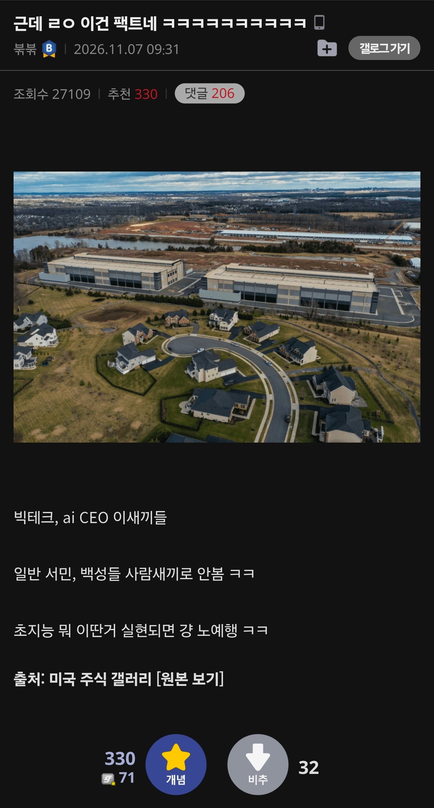

걍 실리콘밸리쪽 인간들 전부가
일반서민 사람으로 안봄
ㄹㅇ 걔네 이미 신귀족임
하긴
지금이야 상부상조?의 형식이라 각종 인프라를 받아야하니까 사람이 필요한데 로봇과 ai가 그 모든 인프라를 성벽쌓고 자기네들만 공급받으면서도 그걸 아무런 제약없이 할 수 있다면?
그 구역에 인구가 5천만명만 돼도 혈통걱정도 없을테고 인류도 유지될테고 그럼 나머지 70억명? 80억명? 알게뭐야 할 수도 있는거 아닐까
댓글 분위기 재밌네 올해 초만 해도 AI기업들 배가르자는 이야기하면 공산주의자 소리 들었을것같은데 ㅋㅋㅋ
트럼프&머스크 빽 믿고 저렇게까지 개지랄을 할 줄 몰랐던거지
성자라도 상대하는줄 알았나?
ㄹㅇ 걍 소모품 취급임